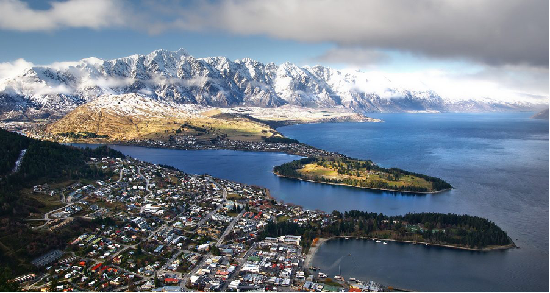
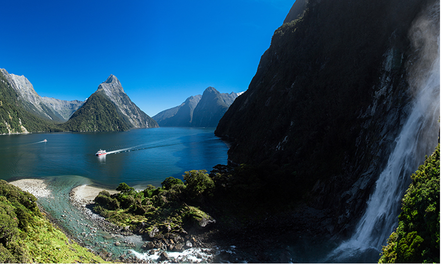
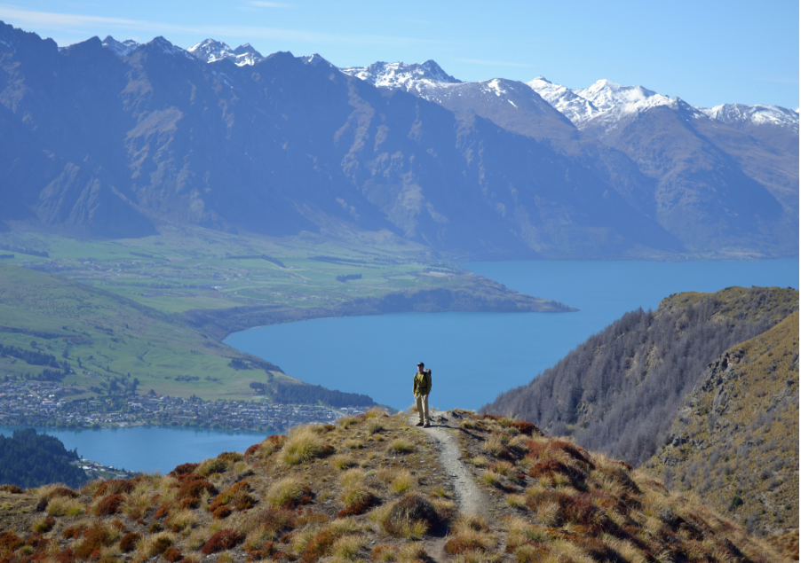
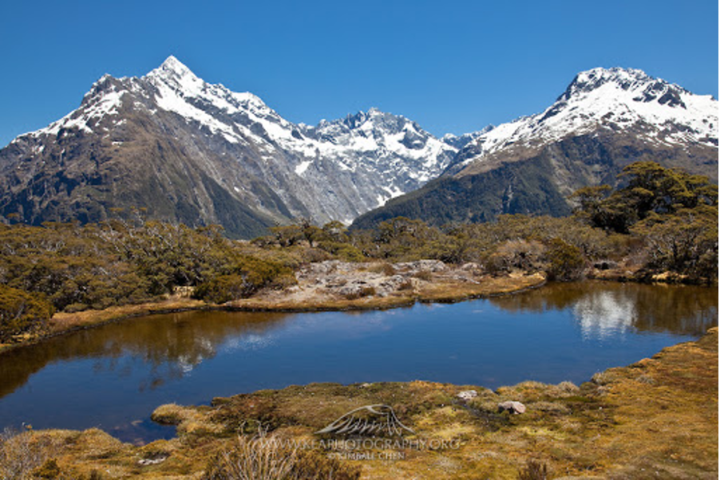
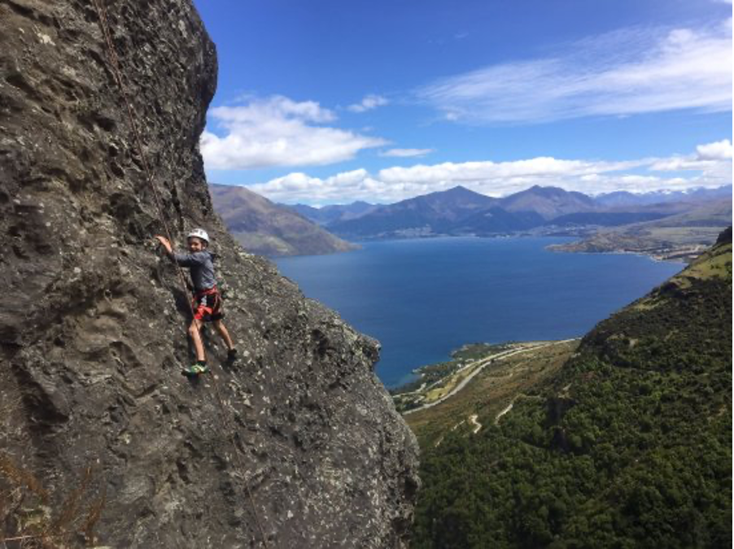
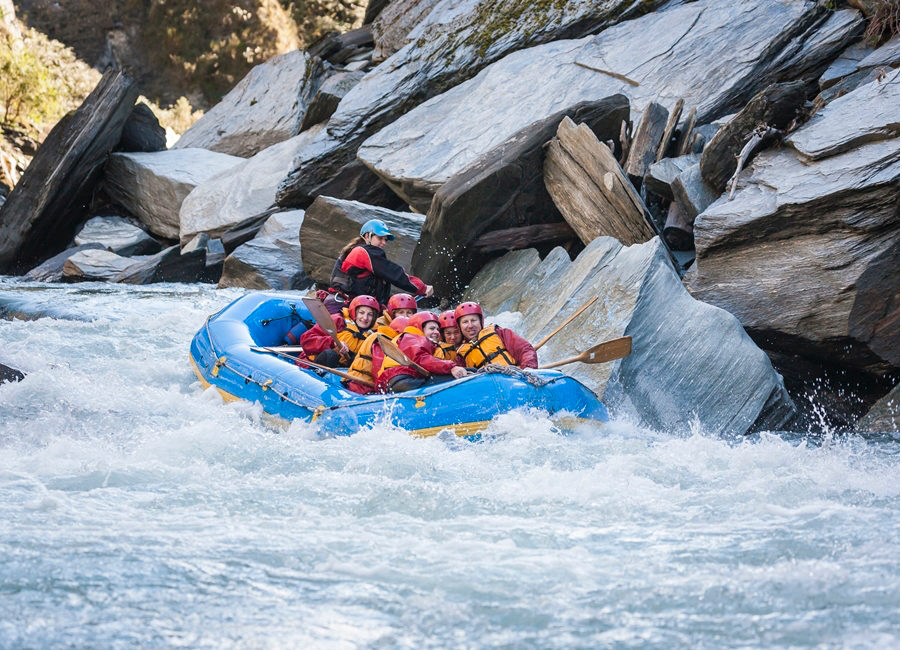

Welcome to ASIC 2022 New Zealand
The 22nd Annual Summer Interdisciplinary Conference, held at the Mercure Queenstown Resort, Sainsbury Road, Fernhill, Queenstown 9300, New Zealand.

Although December is winter in the northern hemisphere, it is summer in New Zealand. The conference had talks every afternoon and evening on the six consecutive days, Wednesday December 21 to Monday December 26, 2022 (the last talks were held the evening of December 26). These dates were chosen in light of university and school schedules, the likelihood that many attendees would want to spend longer in New Zealand or Australia than the six conference days, and because later dates (including New Year's Day) would have roughly doubled lodging prices.
The Mercure Queenstown Resort is a four-star hotel with all the facilities ASIC attendees have come to expect; see the hotel website.
Queenstown
Queenstown is often described as the adventure capital of the world. It lies on New Zealand's South Island, between Mt Aspiring National Park and Fiordland National Park, on the shores of Lake Wakatipu and surrounded by the Remarkables mountain range. It is reachable by flights from Auckland, Wellington, Christchurch, and other airports in New Zealand and Australia.

Activities
Queenstown and the surrounding area is one of the world's most scenic destinations and a world capital for adventure sports. Summer activities include hiking (including the famous multi-day "Great Walks"), scrambling and peak bagging, via ferrata, mountain and road biking, rock climbing, mountaineering, paragliding, bungee jumping, white-water rafting, kayaking, canyoning, and much more.
Organizer
Richard M. Shiffrin of Indiana University – Bloomington is the organizer (see the Contact tab for all contact info).
About the conference
The subject matter of ASIC conferences is interdisciplinary, with a primary emphasis on a wide variety of scientific domains within the broad frame of cognitive science. ASIC follows the successful format of previous ASIC and AIC conferences: days are free for leisure activities and discussion among participants, talks are in the late afternoon and early evening, followed by dinner.
Invitation
The conference is open to all interested parties and their family and friends — no invitation is needed to attend. Due to the small number of speaking slots, if too many attendees wish to speak, the organizer adapts talk lengths and/or selects speakers.
Conference format
There is a single speaking session each day (no posters), intentionally organized to maximize the dissimilarity of each day's presentations. The conference began with registration and a reception with drinks and food from about 15:30–16:15 on Wednesday, December 21. On subsequent days there were drinks and light snacks from about 15:45–16:15, followed by a session of about seven or eight spoken presentations that may have included a mid-session break. The last evening of talks was Monday, December 26.
For a listing of all past ASIC sites, see the previous ASIC sites document.
Registration
Registration was made through the Indiana University Conference Bureau, with the fee covering conference-room rental, equipment, and catering for breaks and receptions.
Fee schedule (US dollars, per attendee)
| Payment window | Fee |
|---|---|
| Prior to July 1, 2022 | $300 |
| July 1 – September 1, 2022 | $350 |
| After September 1, 2022 | $400 |
In addition to the per-attendee registration fee, guest vouchers for others attending receptions and breaks were $25 per guest per day.
Attendees staying at sites other than the conference hotel could take dinner at the conference hotel for $62 NZ per person per dinner, paid directly to the hotel.
Lodging
A block of rooms was held at the Mercure Queenstown Resort.
This 4* hotel has A/C, free parking, free internet, pool, sauna, bar, fitness center, spa, and restaurant for breakfast and dinner; see the hotel website.
Lodging rates
Rates below are inclusive and include breakfast and dinner, except for a 15% surcharge on meals December 25–26.
| Occupancy | Rate |
|---|---|
| One person | $302 NZ/day |
| Two persons in one room | $389 NZ/day |
Rates shown are for a Garden View Room. Children staying in the same room: ages 0–5 free, ages 5–12 $NZ 29, ages 12–16 $NZ 62. A rollaway bed for a child was an additional $NZ 60/night.
Reservations
Email h1994-re2@accor.com, or call +64 3 442 6600 and ask for Sumi Shrestha (Sales).
Deposits & cancellation policy
Reservations made prior to November 21 required a 5% deposit (non-refundable if cancelled before that date). On November 21, 2022, full payment was required and was non-refundable thereafter if cancelled.
Schedule
Each day began with a reception with refreshments and light food near or in the conference room, starting about 15:30–15:45. Talks ran roughly 16:00–20:00, followed by group dinner at the hotel.
Dining & Receptions
A generous breakfast was included in the daily lodging price.
Breakfast was available 6:30–10:00 AM. A buffet dinner was served in the hotel restaurant when the sessions ended, including vegetarian and vegan choices.
Daily receptions
Each day there was a catered reception with drinks and finger food prior to the speaking session, likely sited at the rear of the conference room — about 15:15 on the first day, about 15:45 on subsequent days. The registration fee covered these receptions; guests and family members attending only receptions had a reduced registration fee.
Travel
The Mercure Queenstown Resort is on Sainsbury Road, Fernhill, Queenstown 9300, New Zealand.
Auckland Airport (North Island) is the largest international airport, followed by Christchurch, Wellington, Queenstown, and Dunedin. Direct flights connect Queenstown to the other New Zealand airports and to some airports in Australia. Airport-to-hotel travel by car takes about 20–25 minutes at peak times (about 10 km to the city center, another 2 km to the Mercure).
Many visitors will want to rent a car both for daily travel during ASIC and travel before or after. Driving is on the LEFT in NZ; rental requires a driving license in English. There is free parking at the hotel, first come first served.
Those not renting a car would likely use local buses; the nearest stop to the hotel is roughly a five-minute walk. See orc.govt.nz for bus information. Those coming from the northern hemisphere should consider travel times and jet lag, and might find it useful to arrive a day or two early. A good deal of travel information can be found at queenstownnz.co.nz.
Activities
Queenstown is considered by many the adventure capital of the world, with numerous outdoor activities both in the immediate area and within a day's tour and return by 16:00.

Hiking
There are many day hikes in the immediate vicinity of Queenstown, in addition to the famous multi-day tracks throughout the South Island. See newzealand.com and queenstownnz.co.nz.
Great Walks, Tracks, Tramps
New Zealand is famous for multi-day hikes with huts en route. The Milford Track (54 km, Lake Te Anau to Milford Sound) is known as the greatest "walk" in the world but requires reservations well in advance and a fixed four-day itinerary. The Routeburn (32 km) and Kepler (60 km round trip) tracks are closer to Queenstown, can be done at one's own pace, and are also spectacular — best done on days before or after ASIC.

Mountaineering
The South Island has many mountaineering opportunities, beginning with Mt Cook (for experienced mountaineers) and Mt Aspiring, not far from Queenstown; hiring local guides is recommended for those less experienced.
Scrambling & peak bagging
A number of possibilities near Queenstown in the Remarkables range, such as Single Cone and Double Cone; a local guide is recommended for route finding.
Rock climbing
Numerous areas for single- and multi-pitch climbing not far from Queenstown, perhaps the largest being Wye Creek. As usual, ASIC offered one or two group climbing days at reduced pricing, aimed at all climbers but particularly newcomers.

Via ferrata
A family-friendly favorite offering high mountain exposure and scenic views without technical climbing skill, using cables and rungs affixed to the rock.
Mountain biking
Numerous routes and tracks, with bike rentals available in town.
Canyoning
Participants don wetsuits and, with guides, descend a mountain stream in a narrow canyon — no experience required, suitable for families.
Parasailing, bungee jumping & ziplining
Tandem paragliding flights with an expert guide; bungee jumping from a bridge high over a canyon; and ziplining over Queenstown.
White-water rafting
A favorite activity for families and individuals on the Shotover River near Queenstown.

Contact
Email is preferred for all correspondence.
Conference organizer
Rich Shiffrin
Indiana University – Bloomington
shiffrin@indiana.edu
Tel: 812-855-4972 · Fax: 812-219-5892
Webmaster / Conference Coordinator
Ruth Eberle
Phone: (812) 856-5722
reberle@indiana.edu
Postal address
Annual Summer Interdisciplinary Conference (ASIC 2022 New Zealand)
c/o Prof. Richard Shiffrin, Psychological and Brain Sciences Department
Indiana University, 1101 E. 10th St., Bloomington, IN 47405